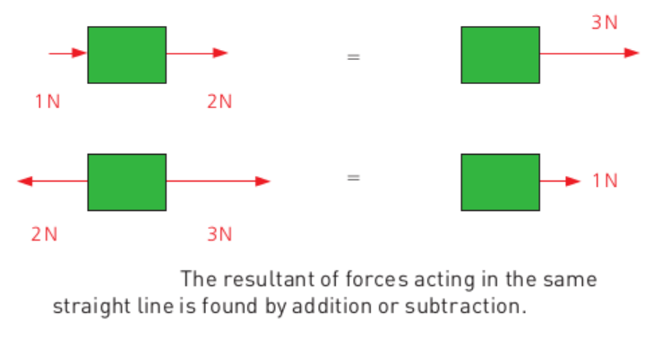

Physics - Year 10
Chapter 2: Forces and Motion

Naypyitaw International Science Academy
2.1 MOTION: Speed, velocity and acceleration

Galileo Galilei, 1564 – 1642
"... is usually credited with being the first to measure speed by considering the distance covered and the time it takes."
2.1 MOTION: Speed, velocity and acceleration
$\text{average speed} = \displaystyle \frac{\text{distance moved}}{\text{time taken}}$
or
$v = \displaystyle \frac{s}{t}$
Speed is a scalar quantity that is a measure of the rate of change of distance.
Unit: If distance is measured in metres and time in seconds, speed is measured in metres per second ($m/s$)
### 2.1 MOTION: Speed, velocity and acceleration
**Workbook 2.1, 1.b.i**
Calculate the speed of a girl walking if she travels $100m$ in $50s$
**Workbook 2.1, 1.b.ii**
Calculate the average speed of a car that travels $2km$ in $2$ minutes
**Workbook 2.1, 1.b.iii**
An athlete moving at $4.5m/s$ travels a distance of $0.09km$. How long does this take?
### 2.1 MOTION: Speed, velocity and acceleration
* A *scalar* is a quantity which is the answer to the question "how much"
* A *vector* is a quantity which answers the questions "how much" + "in which direction"
* **Displacement** is the distance an object travels in a particular direction.
* **Velocity** is the speed an object travels in a particular direction.
> $\text{Velocity} = \displaystyle\frac{\text{displacement}}{\text{time taken}}$
2.1 MOTION: Speed, velocity and acceleration
$\text{avg. acceleration} = \displaystyle \frac{\text{change in velocity}}{\text{time taken}}$
or
$v = \displaystyle \frac{\Delta v}{\Delta t}$
Acceleration is a vector that is a measure of the rate of change of velocity
Unit: If time is measured in seconds and velocity in metres per second, acceleration has the unit metres per second squared ($m/s^2$)
### 2.1 MOTION: Speed, velocity and acceleration
**Workbook 2.2, 1.b**
Calculate the acceleration of a cyclist who increases her velocity from $5 m/s$ to $7 m/s$ in $0.5s$
**Workbook 2.2, 1.c**
How long does it take for a train to increase its velocity from $10m/s$ to $40m/s$ if it accelerates at $3 m/s^2$?
**Workbook 2.2, 1.d**
A car, initially travelling at $6 m/s$, accelerates at $4 m/s^2$ for $2.5s$. What is its final velocity?
2.2 MOTION: Motion Graphs
Distance-Time graphs

On a distance-time graph: speed = gradient
2.2 MOTION: Motion Graphs
Velocity-Time graphs
On a velocity-time graph: acceleration = gradient
On a velocity-time graph: distance travelled = area under the graph
2.2 MOTION: Motion Graphs

Interpreting a velocity-time graph (or a speed-time graph)
2.2 MOTION: Motion Graphs
Workbook 2.4, 1.b.i
Calculate the acceleration in sections $A$, $B$, $C$
Workbook 2.4, 1.b.ii
Find the distance travelled in each section
### 2.2 MOTION: Motion Graphs
**Workbook 2.4, 2 (Extension)**
Sketch a velocity time graph for the following journey:
A girl runs with a constant acceleration of $1.5 m/s^2$ for $3s$. She then runs at a steady speed for $5s$ before decelerating at a decreasing rate for $10s$. Include values of both axes.
Extra: Vectors
A vector is a quantity having direction as well as magnitude
The most accurate mental image for a vector is to imagine a directed arrow of a certain size.
Extra: Vectors

Imagine kicking a ball in two different directions at the same time
Extra: Vectors

The result will be a combined effect of the two forces. This is known as the parallelogram law of vector addition.
Extra: Vectors

Decomposing velocities using vector addition
2.3 MOTION: Recording Motion
For Self Study
### 2.4 MOTION: Free Fall
* **Acceleration of free fall** is the *constant* downward acceleration applied on an object which makes it fall down
* This acceleration is represented by the symbol $g$.
* On Earth, the acceleration measures to be $9.8m/s^2$.
* On the moon, it is $1.62m/s^2$
* On Jupiter, it is $24.9m/s^2$
### 2.4 MOTION: Free Fall
**Learners Book, 2.5 Page 2**
A ball is thrown upwards with an initial velocity of $30m/s$. Graph the velocity-time graph for the motion till it falls back to the starting point.
**Extra Question:** How much distance has the ball travelled?
### 2.4 MOTION: Free Fall
* Without air resistance, gravity causes an acceleration of $9.8m/s^2$.
* With air resistance:
* The object falls and its speed increases
* The faster an object moves, the more air resistance it faces
* Eventually air resistance and gravity are equal and opposite
* No resultant acceleration, so the speed becomes constant
* This constant speed is known as the **terminal velocity**
The terminal velocity of a human is around $200km/h$.
The terminal velocity of an ant is around $6km/h$.
### 2.4 MOTION: Free Fall
The terminal velocity of an object depends on the weight, size and shape.
* A small dense object has a high terminal velocity
* A light object with larger area has a low terminal velocity
EXTRA: Different ideas of gravity in history

Aristotle (~400 B.C)
Aristotle thought that heavier objects fell faster than lighter objects.
Aristotle's explanation of gravity is that all bodies move toward their natural place. According to him, the natural place of water is a concentric shell around the Earth because earth is heavier; it sinks in water.
EXTRA: Three different ideas of gravity in history

Brahmagupta, ~668 A.D.
In 628 CE, Brahmagupta was the first to describe gravity as an attractive force, and used the term "gurutvākarṣaṇam" in Sanskrit to describe it.
EXTRA: Three different ideas of gravity in history
Galileo Galilei, 1564 – 1642
Galileo showed that all objects fall at the same rate regardless of their mass, proving Aristotle wrong. According to legend, Galileo dropped balls of very different weights off of the Leaning Tower of Pisa to demonstrate this.
2.5 MOTION: More Motion Graphs
For Self Study

2.6 MOTION: Forces in Balance
For Self Study
- A force is a push or a pull exerted by one object on another
- The SI unit of the force is the Newton ($N$)
### 2.7 MOTION: Force, mass, acceleration
* A force is a push or a pull. It can cause an object at rest to move, or if the body is already moving, it can change its speed or direction of motion.
* A force can also change a body’s shape or size. For example, a spring (or wire) will stretch when loaded with a weight.
2.7 MOTION: Force, mass, acceleration
Forces are vectors

Note: Any resultant force causes an acceleration in the same direction as the resultant force
### 2.7 MOTION: Force, mass, acceleration
Newton's three laws of motion are three physical laws that describe the relationship between the motion of an object and the forces acting on it.
* **First Law:** If a body is at rest or moving at a constant speed in a straight line, it will remain at rest or keep moving in a straight line at constant speed unless it is acted upon by a force.
* This resistance to change in velocity is known as **inertia**
* **Second Law:** Gives a mathematical relationship between force, mass and acceleration
* **Third Law:** For every action, there is an equal and opposite reaction.
### 2.7 MOTION: Force, mass, acceleration
##### Newton's second law of motion
> The resultant force acting on an object is proportional to the mass of the object and its acceleration.
> $$ \text{Force} = \text{Mass} \times \text{Acceleration}$$
> or
> $$ F = ma$$
**Question:** The quantity on the LHS has the SI unit Newton, and the quantity on the RHS has SI unit $kg\\; m/s^2$. Does this mean $1 N = 1 kg \\; m/s^2$?
**Answer:** $1$ Newton is the force required to give a mass of $1$ kilogram an acceleration of $1 m/s^2$.
### 2.7 MOTION: Force, mass, acceleration
**Workbook 2.7, 1.a.i**
Calculate the force exerted on an object if it accelerates at $5m/s^2$ and has a mass of $0.5kg$
**Workbook 2.7, 1.a.ii**
Calculate the acceleratation produced if a force of $3000N$ acts on a car of mass $900kg$
**Workbook 2.7, 1.a.iii**
What is the mass of a boy if he accelerates at $2m/s^2$ when a force of $95N$ acts on him?
**Workbook 2.7, 1.d (Extension)**
A pilot will lose consciouness if he is subjected to accelerations greater than 8 times the acceleration due to gravity (8g). By how much can the speed of his aeroplane increase in $2$ seconds if he is to remain conscious?
### 2.9 MOTION: Force, weight and gravity
* Any acceleration has to be caused by a **resultant** force.
* Every objects accelerates towards the earth at $9.8m/s^2$
* This acceleration due to gravity is also caused by a force: the **gravitational force**
* All masses exert a gravitational force on each other
**Question:** What causes the gravitational force?
### 2.9 MOTION: Force, weight and gravity
* **Definition:** Weight a gravitational force on an object that has mass
* **Definition:** Mass is a measure of the quantity of matter in an object
Wherever you are, your mass remains constant. However your weight on the moon would be 16% of what your weight is on the Earth.
> $$ \text{Weight} = \text{mass} \times \text{acceleration due to gravity}$$
> or
> $$W = mg$$
**Question:** What is the unit of Weight?
### 2.9 MOTION: Force, weight and gravity
* The force of gravity acts through space and causes an object to fall to the ground.
* We try to explain gravity by saying that the Earth is surrounded by a gravitational field which exerts a force on any object in the field.
* The **gravitational field strength** is defined as the force acting per unit mass.
2.9 MOTION: Force, weight and gravity

Important. Also refer Section 2.9 "Two meanings for $g$"